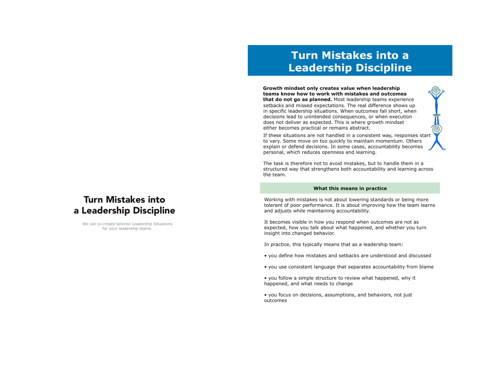
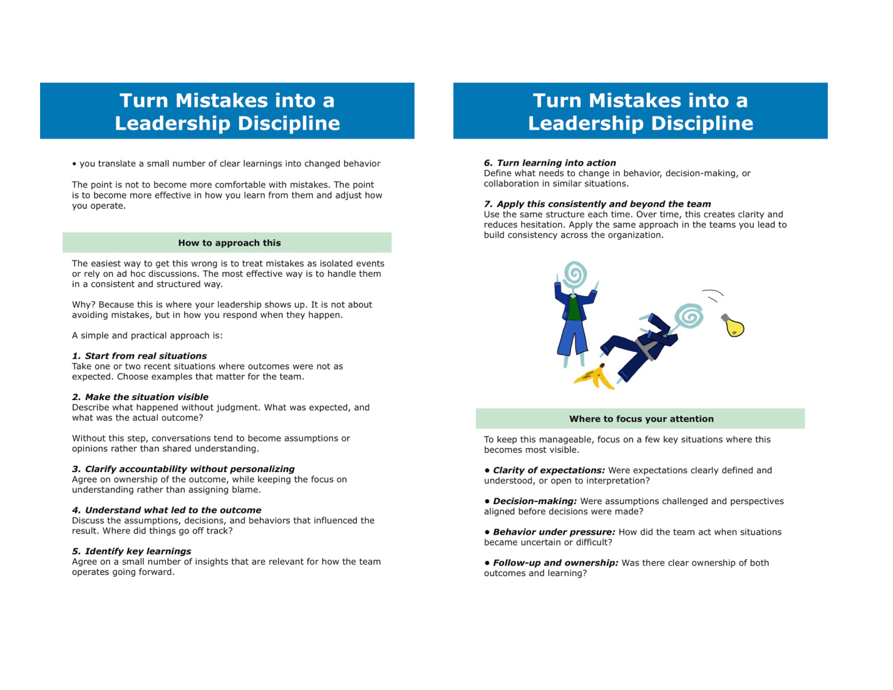
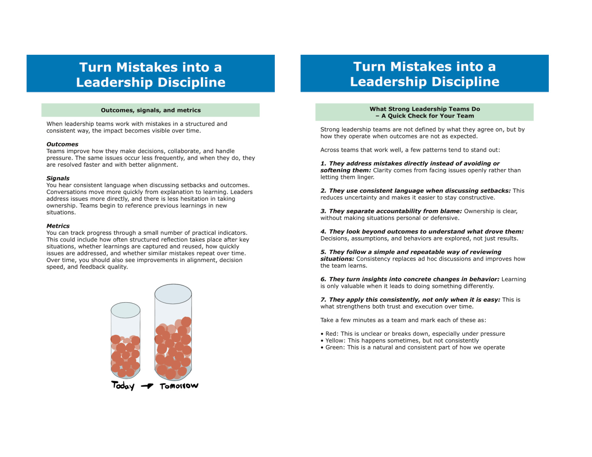
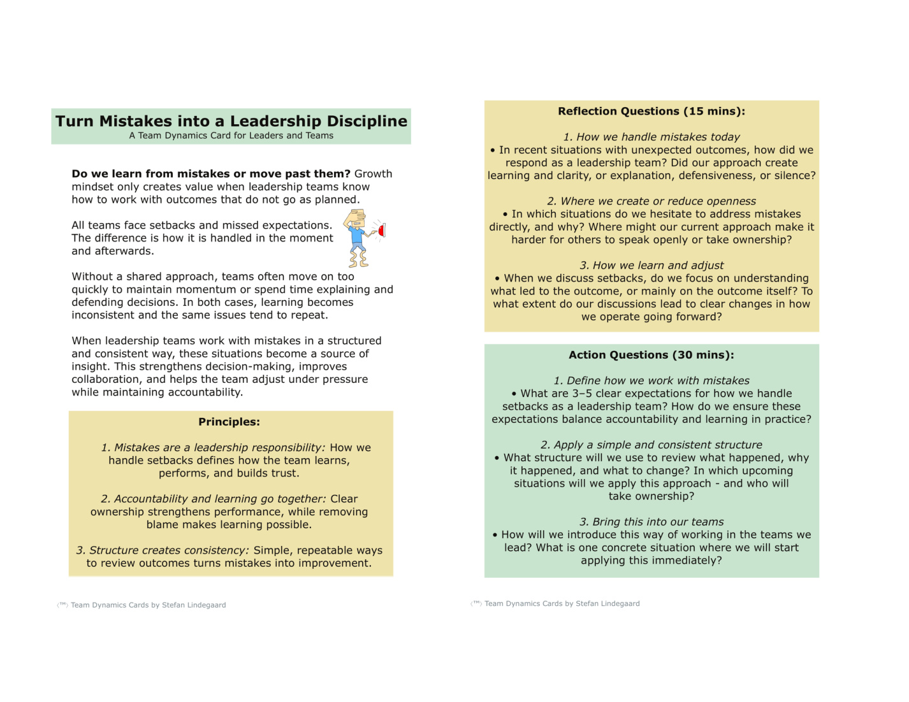

Turn Mistakes into a Leadership Discipline
Growth mindset only creates value when leadership teams know how to work with mistakes and outcomes that do not go as planned. This tool helps you turn one real setback into a structured learning moment, without lowering standards or making accountability personal.
Use this individually first, then bring the summary into your leadership team. The aim is to create a repeatable way of learning from outcomes, decisions, assumptions, and behavior under pressure.
1. Start from a real situation
Choose one recent situation where the outcome was not what you expected. It should matter enough that there is something to learn, but it does not need to be dramatic. The best examples are often ordinary leadership situations where the same pattern could easily happen again.
2. Make the situation visible
Before learning can happen, the situation needs to be made visible without judgment. Many leadership teams skip this step and move too quickly into opinions, explanations, or fixes.
3. Diagnose the leadership response
When outcomes fall short, leadership teams often fall into one of a few patterns. None of these are unusual. The point is to identify the dominant response so the team can work with it more consciously next time.
Move on quickly
Focus on restoring momentum and getting past the issue.
Explain and defend
Spend energy clarifying why the situation happened and protecting decisions.
Personalize accountability
Ownership becomes attached to individuals rather than decisions, assumptions, or system patterns.
Structured learning
Use the situation to understand assumptions, decisions, behavior, and what needs to change.
4. Where did things go off track?
Use the four focus areas below to identify what most influenced the outcome. This helps move the conversation away from blame and toward decisions, assumptions, and behaviors that can actually be changed.
5. What strong leadership teams do
Mark each pattern as red, yellow, or green for your team. This is not a scorecard for perfection. It is a quick check to see where you need more consistency.
6. Turn learning into changed behavior
Learning only creates value when it changes how the team operates next time. Use this section to define a practical next step that you can bring into your leadership team or apply in the team you lead.
Download the PDF version
The PDF version works as a static Team Dynamics Card-style overview. The interactive version above is meant to show how Leadership Situations can become practical tools, tailored to your organization.



